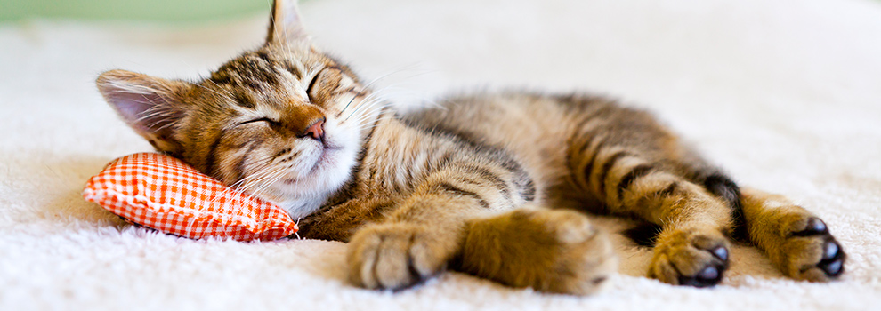
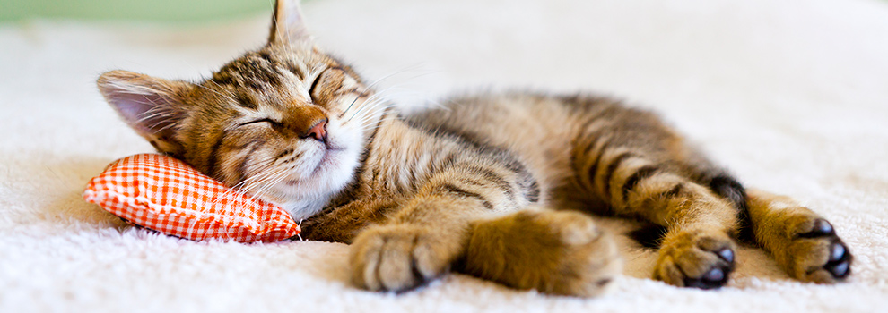

Cat Care Basics: What Every Cat Owner Should Know
Nutrition & Feeding
Cats need a balanced diet that includes:
- High-quality protein (meat-based)
- Healthy fats
- Essential vitamins & minerals
- Fresh water every day
Dry food vs. wet food: Wet food adds hydration and is great for urinary & kidney health. Dry food is convenient and helps with dental abrasion. Many owners do a mix of both.
No human food: Avoid onions, garlic, chocolate, grapes, raisins, caffeine, alcohol, and anything seasoned.
Litter Box Care
A clean litter box = a happy cat.
- 1 box per cat + 1 extra (So two cats = three boxes)
- Scoop daily
- Fully replace litter & clean the box weekly
- Keep it in a quiet, low-traffic location
- Avoid scented litter—many cats hate it
Grooming
Even short-haired cats need grooming.
- Brushing: Removes loose fur, prevents hairballs, reduces shedding.
- Nail trimming: Every 2–4 weeks
- Bathing: Only if needed (cats self-clean extremely well)
- Dental care: Cat-safe toothpaste + toothbrush 2–3 times per week helps prevent dental disease.
Enrichment & Play
Cats need mental and physical stimulation.
- Daily play sessions (wand toys, lasers, kick toys)
- Cat trees & scratching posts
- Window perches
- Puzzle feeders or treat toys
- Safe outdoor experiences like catios or harness training
Play prevents:
- Boredom
- Anxiety
- Destructive behavior
- Obesity
Health & Vet Care
Routine vet care is essential.
- Annual health exams
- Vaccinations
- Flea & tick prevention
- Spay/neuter
- Dental checkups
-
Watch for signs of illness:
- Sudden hiding
- Not eating
- Limping
- Vomiting repeatedly
- Trouble using the litter box
Cat-Proofing Your Home
Keep your cat safe by checking:
- Toxic plants (lilies are deadly to cats)
- Loose wires & cords
- Open windows without screens
- Small objects they can swallow
- Chemicals and cleaners
- Human medications
Behavioral Understanding
Understanding cat body language helps avoid stress.
- Relaxed: Tail up, slow blinking, making biscuits
- Playful: Crouched, wiggling rear, dilated pupils
- Scared or stressed: Ears back, tail tucked, hiding
- Overstimulated: Twitching tail, sudden swat, quick movements
Senior Cat Care
Older cats (10+) need:
- Softer bedding
- Litter boxes with low sides
- More frequent vet visits
- Joint supplements (ask a vet)
- Warm spots to sleep
- Slightly adjusted diets for kidney or weight support
Building a Bond
Creating trust takes time.
- Let them approach you first
- Keep routines consistent
- Reward with treats, play, and gentle affection
- Give them space when they need it
A strong bond makes your cat happier, healthier, and more confident.